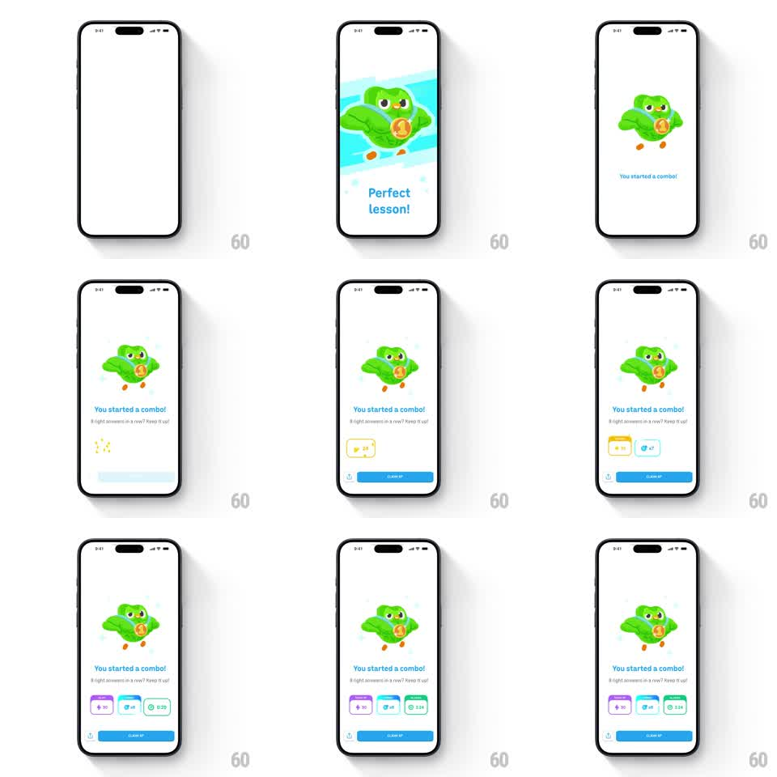

Media
Frame-by-frame

Rebuild this animation 1:1: Duolingo's combo-starter celebration - a muscle-bound owl flexes on a light blue burst with a medal on its chest, "You started a combo!" lands with its subline, and reward chips (XP, multiplier, time) pop in one by one above the CLAIM XP button.

Rebuild this animation 1:1: Duolingo's combo-starter celebration - a muscle-bound owl flexes on a light blue burst with a medal on its chest, "You started a combo!" lands with its subline, and reward chips (XP, multiplier, time) pop in one by one above the CLAIM XP button. ## Integration Integration: stack-agnostic spec - springs given as stiffness/damping, timed motions as duration + curve; map every value to your framework and animation library of choice. ## Scene Light screen: buff owl flexing both arms with a gold medal, cyan burst backdrop, "You started a combo!" headline, "8 right answers in a row? Keep it up!" subline, three reward chips, blue CLAIM XP button. ## Motion spec Pattern: character flex + reward cascade, ~2.5s. - Entrance: burst scales in behind the owl (300ms); the owl springs in (scale 0.75 -> 1, spring ~300/16) with its arms snapping into the flex (50ms delay after body lands). - Flex loop: subtle alternate arm pulse (bicep scale 1 -> 1.05, 900ms, alternating) + medal sway (rotate +-4deg, 1.4s) with a shine sweep across the medal every 3s. - Chips: pop in left to right (spring ~400/16, 130ms stagger), multiplier chip last with a glow pulse. - Copy and button rise in below (250ms each, ease-out). ## Calibration - The flex is a loop but a quiet one - the pose does the boasting, not the motion. - Medal shine is periodic, not constant. ## Reduced motion Static owl; chips fade in together (200ms). ## Don't miss - Same cascade rhythm as other celebration screens - the system consistency is intentional. - The combo subline names the streak count exactly; keep copy dynamic, not generic.